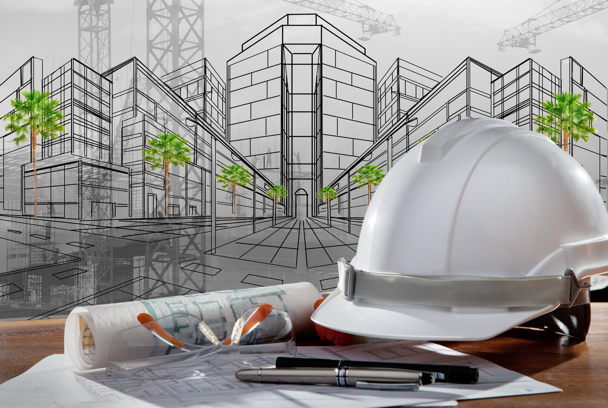

OARI CONSTRUCTION
≎̸ Dream, Design & Build
OARI CONSTRUCTION
≎̸ Dream, Design & Build
The cornerstone of any successful construction project is a well-defined blueprint. These aren't just ordinary drawings – they're the detailed roadmap guiding every step, from the foundation to the final flourish. Construction drawings are the language of builders, architects, and engineers, a visual symphony that translates dreams into reality. Imagine towering skyscrapers rising from meticulously planned grids, intricate plumbing systems flowing flawlessly based on precise schematics, or entire communities taking shape according to detailed layouts. This is the power of construction drawings – the silent conductor orchestrating the entire construction ballet.
The foundation of every structure, from towering skyscrapers to cozy homes, lies in the selection of the right materials. In the construction field, these materials become the building blocks that transform dreams into reality. They are more than just bricks and mortar; they are the innovators that shape our environment, offering strength, flexibility, and sustainability. From the gleaming steel that defines modern skylines to the resilient concrete that withstands the test of time, construction materials are a fascinating blend of science and artistry. Understanding their properties, applications, and environmental impact is key to creating structures that are not only aesthetically pleasing but also safe, durable, and efficient. So, delve into the world of construction materials, and discover how these silent partners play a crucial role in shaping the world around us.
The foundation of every structure, from towering skyscrapers to cozy homes, lies in the selection of the right materials. In the construction field, these materials become the building blocks that transform dreams into reality. They are more than just bricks and mortar; they are the innovators that shape our environment, offering strength, flexibility, and sustainability. From the gleaming steel that defines modern skylines to the resilient concrete that withstands the test of time, construction materials are a fascinating blend of science and artistry. Understanding their properties, applications, and environmental impact is key to creating structures that are not only aesthetically pleasing but also safe, durable, and efficient. So, delve into the world of construction materials, and discover how these silent partners play a crucial role in shaping the world around us.
We provide a variety of services to meet your needs.
To be the premier provider of innovative, sustainable,
and high-quality construction solutions, shaping environments that inspire and endure for generations to come.
Our mission is to deliver exceptional construction services with integrity, professionalism,
and excellence. We strive to exceed client expectations by fostering collaborative relationships,
embracing cutting-edge technologies, and prioritizing safety and environmental sustainability in every project we undertake.
Contact Number: 076 - 56 87 543
Email : oaricon08@gmail.com